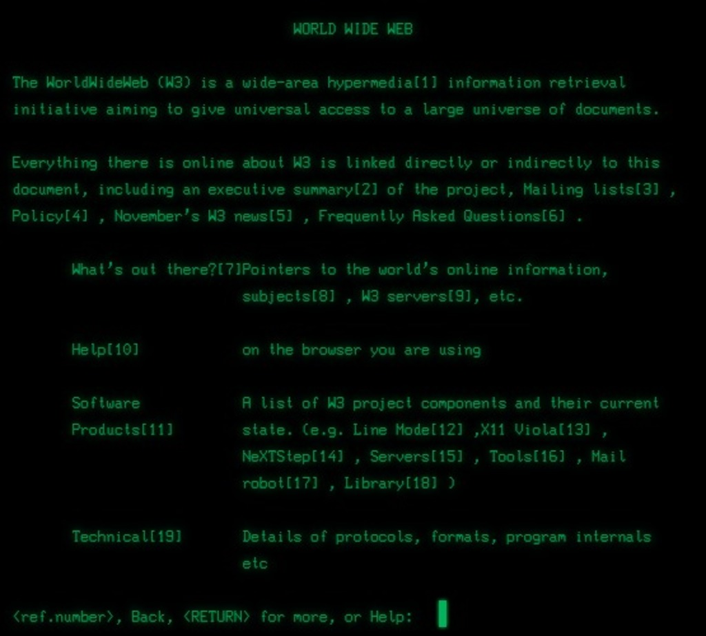
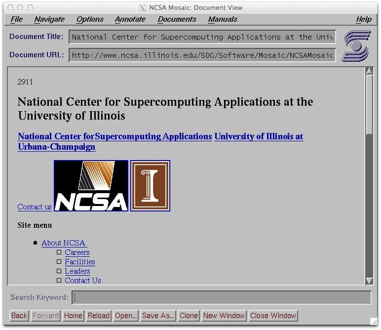
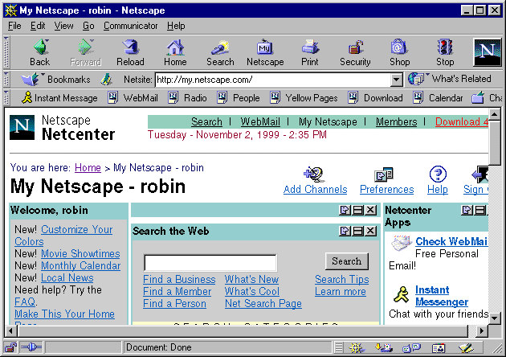
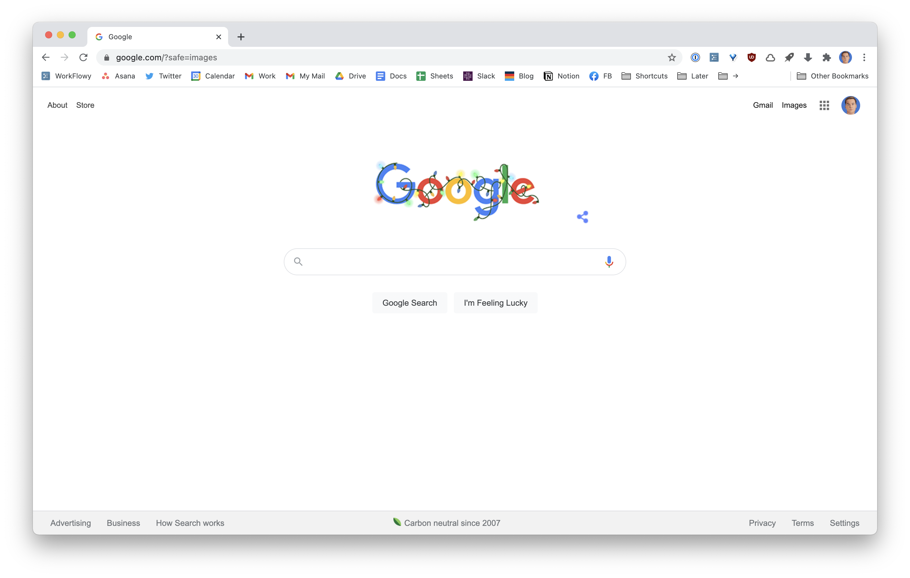

Early Web Browsers
Tim Berners-Lee created the first web browser, known as WorldWideWeb, in 1990. This browser was text-based and designed to share information; furthermore, it did not support images, videos, or interactive features. Even though it was very simple, it was important because it made it possible to share information.

NCSA Mosaic
A few years later, in 1993, NCSA Mosaic was released and became the first user-friendly web browser that was widely used. It introduced support for images placed directly inside web pages, which made websites more appealing. This change attracted more users and increased interest in improving the internet experience.

Netscape Navigator
One of the most important browsers that followed Mosaic was Netscape Navigator, which was released in 1994. Netscape became popular because it was faster and easier to use than earlier browsers. It also supported images, hyperlinks, and early scripting features. These scripting features allowed websites to respond to user actions, which made them feel more interactive instead of just showing static text. Businesses and organizations even started creating websites as well.

The Browser Wars
As Netscape grew in popularity, other companies wanted to compete in the browser market. This period became known as the “browser wars”. In 1995, Microsoft released Internet Explorer, and during this time, browsers started adding new features, including bookmarks, better navigation tools, and improved support for multimedia content. Although this competition increased innovation, it also created issues. Different browsers supported different features and interpreted website code in different ways, which resulted in some websites working well in one browser but not the other.
Modern Web Browsers
By the early 2000s, Internet Explorer began to dominate the browser market, causing updates to slow and security problems to increase. To address this, organizations like the World Wide Web Consortium (W3C) developed standards for HTML, CSS, and JavaScript. These standards helped ensure that websites would function more consistently across different browsers.
Later, Mozilla Firefox and Google Chrome helped improve browser performance, security, and stability. Chrome introduced a new architecture that separated tabs into different processes, which helped prevent the entire browser from crashing.
